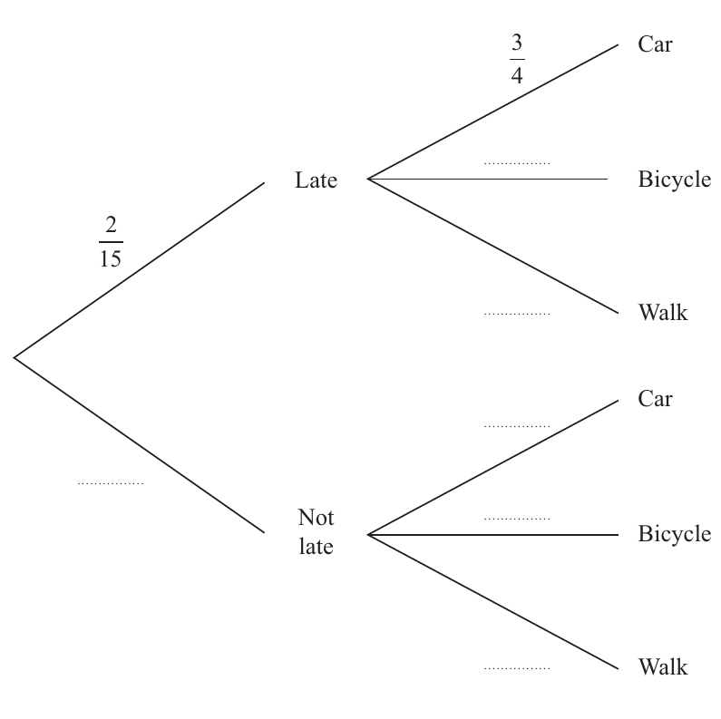
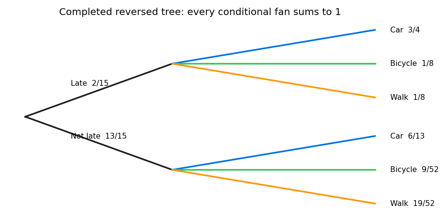

When Paul goes to work, he travels by car or by bicycle or he walks.
- the probability that he travels by car is $1/2$
- the probability that he travels by bicycle is $1/6$
- the probability that he walks is $1/3$
Given that Paul
- travels by car, the probability that he is late is $1/5$
- travels by bicycle, the probability that he is late is $1/10$
- walks, the probability that he is late is $1/20$
(a) Show that on any day that Paul goes to work, the probability that he is late is $2/15$ (1)
Given that Paul is late on a day that he goes to work,
(b) show that the probability that he travels to work by car is $3/4$ (2)
(c) Hence complete the tree diagram on page 28, to represent the given information. (4)
Status: worked through (a)–(c) with prompting, including all six reversed-tree branches.

[7 marks: (a)1, (b)2, (c)4]
The strategy is to multiply along each complete late path and add the three mutually exclusive transport paths. Do not add branch labels that do not represent complete joint events.
Paul can be late after exactly one of car, bicycle or walk. The product rule gives each joint path; the addition rule combines disjoint routes.
The general rule of total probability is $P(L)=\sum_m P(m)P(L\mid m)$ over the three transport modes.
Lesson evidence shows the common trap of initially summing branch labels and a tutor prompt toward complete-path products. That diagnosis is specific and supports completed with prompting.
Write the three late joints in transport order: car gives $(1/2)(1/5)=1/10$, bicycle gives $(1/6)(1/10)=1/60$, and walking gives $(1/3)(1/20)=1/60$. These events are disjoint because Paul uses exactly one transport mode. Converting to sixtieths gives $6/60+1/60+1/60=8/60=2/15$, which is the displayed target rather than a decimal approximation.
The total-probability route stops exactly at P(L)=2/15. Transfer by multiplying along every disjoint complete route to the endpoint, adding the joints and retaining exact fractions for subsequent conditioning.
$$P(L)=\frac12\frac15+\frac16\frac1{10}+\frac13\frac1{20}=\frac1{10}+\frac1{60}+\frac1{60}=\frac6{60}+\frac2{60}=\boxed{\frac2{15}}.$$ The two smaller paths are equal.
Calculate the three disjoint late joints in transport order: 1/10, 1/60 and 1/60. The difficult transition is recognising that the endpoint ‘late’ is reached by mutually exclusive complete paths, so multiplication happens down a path and addition happens across paths. This part has no evidenced learner error. Check with common denominator 60: 6+1+1=8, giving 8/60=2/15 exactly rather than a rounded decimal. The stopping point is the printed target 2/15. Transfer by labelling each path with its joint event, multiplying prior by conditional probability, confirming paths are disjoint, and summing only complete routes that reach the requested endpoint.
The total can be reconstructed from the complement paths as well, but the direct late-path sum is the shortest one-mark proof. Its value 2/15 is larger than each small bicycle/walk joint and smaller than the sum of transport priors, as expected. In another tree, the reusable recognition trigger is an overall endpoint reached by several mutually exclusive routes: multiply conditional labels down each full route, then add only complete route probabilities.
Use conditional probability with the car-and-late joint event in the numerator and the total late probability from part (a) in the denominator.
Conditioning on late changes the sample space. The numerator is $P(C\cap L)=P(C)P(L\mid C)$; independence is neither stated nor needed.
Use $P(C\mid L)=P(C\cap L)/P(L)=P(C)P(L\mid C)/P(L)$.
The lesson evidence records prompting through numerator and denominator. It also records the tutor distinguishing a joint product from an independence assumption.
The event in the numerator is car and late, whose forward-tree joint is $1/10$; the conditioning event in the denominator is all late journeys, $2/15$. Writing those event names beside the fraction prevents substitution of the printed $P(L\mid C)=1/5$ as the denominator. Bayes' reversal here is arithmetic on a joint and a marginal, not an assertion that car and lateness are independent.
The late-conditioned sample contains joint mass $2/15=8/60$, of which car supplies $1/10=6/60$. The remaining $2/60$ is split equally between bicycle and walk. This common-denominator picture makes $6/8=3/4$ visible before algebra and explains why the reversed car branch dominates without invoking any unsupported independence statement.
The reversal stops at P(C|L)=3/4 and multiplies back to joint 1/10. Transfer by naming the common joint numerator, changing the denominator to the event after the conditioning bar and verifying through reconstruction.
The joint numerator is $(1/2)(1/5)=1/10$. Therefore $$P(C\mid L)=\frac{1/10}{2/15}=\frac1{10}\times\frac{15}{2}=\frac{15}{20}=\boxed{\frac34}.$$ The denominator is the total late probability, not $1/5$.
Use the car-and-late joint 1/10 over the late marginal 2/15. The difficult transition is reversing the conditioning direction: the printed 1/5 is P(L|C), not P(C|L), so it cannot simply be copied as the answer. There is no evidenced learner error here; the distinction is a neutral Bayes check. Simplify (1/10)/(2/15)=15/20=3/4. Verify by multiplication: (3/4)(2/15)=1/10, recovering the forward joint exactly. Stop at the printed target 3/4. Transfer by writing the common joint in the numerator and using the event after the conditioning bar as the denominator, then multiplying back to audit the reversal.
Multiplying the result back verifies the reversal: $(3/4)(2/15)=6/60=1/10$, exactly the forward car-late joint. The other late joints together are $1/30$, leaving car with three quarters of the conditioned late sample. For transfer, distinguish $P(A\mid B)$ from $P(B\mid A)$ by writing the common joint numerator and changing only the denominator to the event after the conditioning bar.
Reverse the tree by splitting first into late and not late, then divide each forward joint probability by the appropriate first-stage total. Complete all six branches and check each fan sums to one.
A reversed tree represents the same joint events in a different order. Conditional branches are recovered as joint probability divided by the probability of the new first-stage event.
Use $P(m\mid L)=P(m\cap L)/P(L)$ and $P(m\mid L')=P(m\cap L')/P(L')$, with $P(L')=1-2/15=13/15$.
Lesson evidence records initial confusion about reversing the tree and completion after joint/conditioning prompts. All six branches were reached, so the status is completed with prompting.
Build a six-cell joint table before division. Late joints are $1/10,1/60,1/60$; not-late joints are $(1/2)(4/5)=2/5$, $(1/6)(9/10)=3/20$, and $(1/3)(19/20)=19/60$. Row totals are $2/15$ and $13/15$. Those totals become the first split of the reversed tree, while each cell divided by its row total becomes a second-stage conditional branch.
The first reversed split must itself be complete: Late $2/15$ and Not late $13/15$ sum to one. Only then should the six transport conditionals be attached beneath the correct parent. Keeping the two denominators written above their respective rows prevents a not-late joint such as $19/60$ from being divided by the late total, which would produce a branch above one.
The endpoint is a fully completed reversed tree whose two conditional fans each sum to one. Transfer by preserving six forward joints, normalising within the new first-stage groups and multiplying every reversed branch back to its joint.
Late branches are car $3/4$, bicycle $[(1/6)(1/10)]/(2/15)=1/8$, walk $[(1/3)(1/20)]/(2/15)=1/8$. Not-late joints are $2/5$, $3/20$, $19/60$; division by $13/15$ gives car $6/13$, bicycle $9/52$, walk $19/52$. Thus the complete reversed fans are $\boxed{(3/4,1/8,1/8)}$ and $\boxed{(6/13,9/52,19/52)}$.

Build all six forward joints before normalising within the new first-stage groups. Late has 1/10,1/60,1/60 and total 2/15; not late has 2/5,3/20,19/60 and total 13/15. The difficult transition is dividing each joint by the correct row total after reversing the order. No learner error is evidenced in this completed part. Check both conditional fans: 3/4+1/8+1/8=1 and 6/13+9/52+19/52=1; multiply each branch by its parent to recover its joint. Stop when every dotted branch in the official tree is filled. Transfer by preserving joints, changing the first split, normalising within each new group, and checking every fan sums to one.
Every completed fan supplies a decisive check: $3/4+1/8+1/8=1$ under Late, and $6/13+9/52+19/52=24/52+9/52+19/52=1$ under Not late. Multiplying any reversed branch by its first-stage total must recover its original joint. This two-way reconstruction is the transfer method for reversed trees: preserve joints, change ordering, normalise within each new first-stage group, then check all fans.